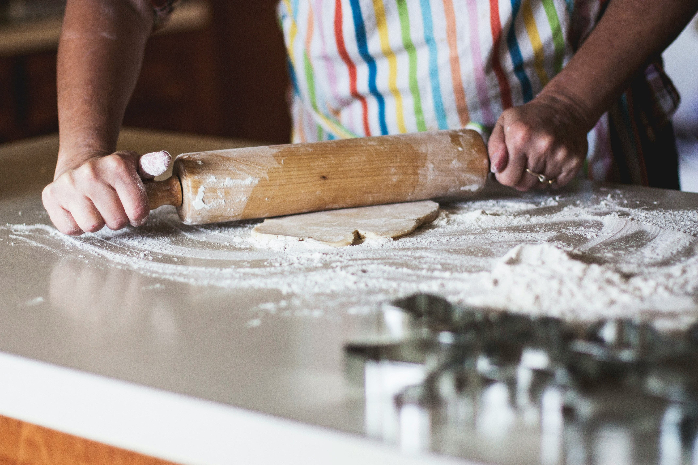
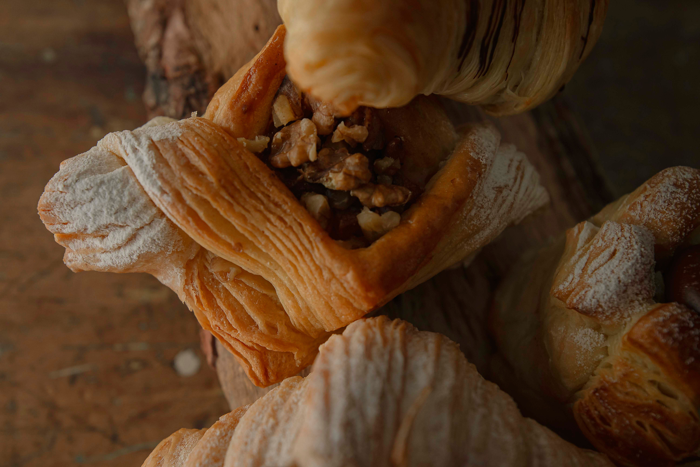
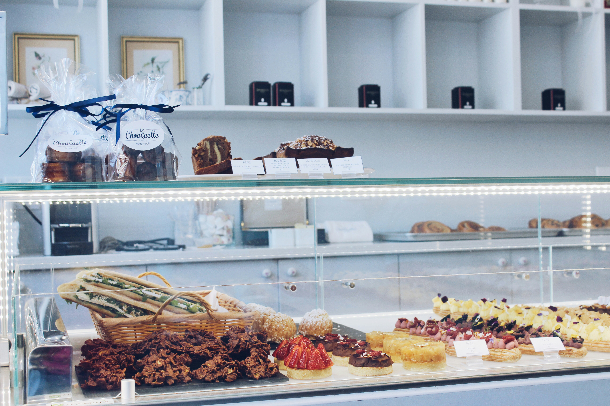
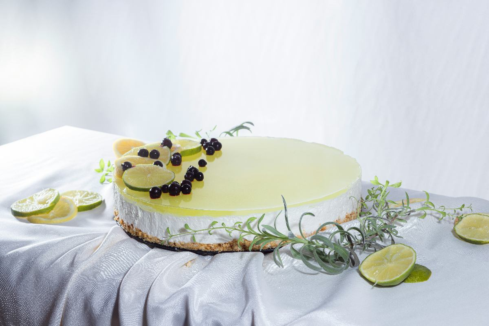
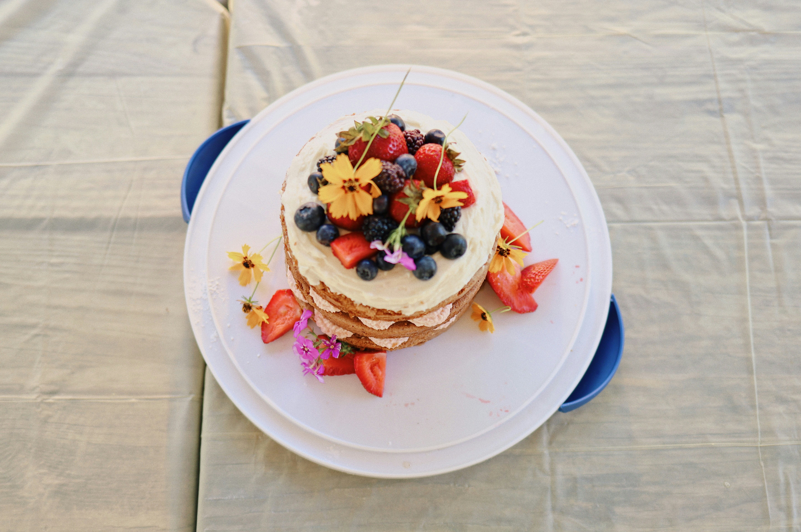
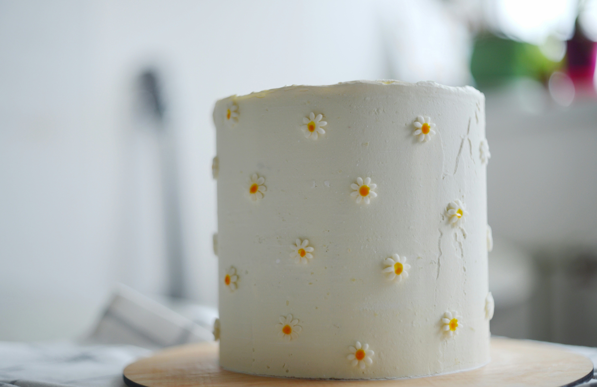

¿Querés que más personas conozcan tu trabajo? Acá reunimos consejos prácticos basados en el análisis de las cuentas más exitosas de pastelería, para que tu presencia digital sea tan irresistible como tus productos.
Uno de los hallazgos más consistentes en el análisis de cuentas exitosas es que los videos del proceso generan mucho más interacción que las fotografías del producto terminado. El amasado, la decoración, el momento en que abrís el horno, incluso los errores que se corrigen: todo eso conecta con la audiencia de una manera que ninguna foto final puede igualar. La gente quiere ver el hacer, quiere sentirse parte del proceso.

La torta es hermosa, pero la persona detrás es lo que genera el vínculo real. Las cuentas que más crecen no son las que muestran sólo productos: son las que construyen una identidad, una historia, una presencia humana reconocible. Contá por qué empezaste, qué significa este oficio para vos, qué desafíos tuviste, qué aprendiste.
Hablá a cámara aunque te dé vergüenza. Mostrá tu cocina, tu rutina, tu proceso. La autenticidad no tiene filtro y eso, paradójicamente, es lo que más atrae en un entorno saturado de imágenes perfectas.

Uno de los errores más comunes entre emprendedoras que recién empiezan en redes es esperar al momento perfecto para publicar: la foto ideal, la iluminación correcta, el texto elaborado. Ese perfeccionismo paraliza y, desde el punto de vista del algoritmo, es contraproducente. Las plataformas premian la regularidad por encima de la perfección. Mejor tres publicaciones por semana de manera sostenida que diez en una semana y luego semanas de silencio.
Armá un calendario sencillo y respetalo: eso es lo que el algoritmo reconoce y premia con mayor alcance.
En 2026, Instagram y TikTok siguen priorizando los videos cortos por encima de cualquier otro formato. Un Reel de 30 a 60 segundos mostrando cómo decorás una torta puede llegar a miles de personas que nunca te siguieron, simplemente porque el algoritmo lo distribuye más ampliamente que una foto. Aprendé a usar las herramientas básicas de edición (CapCut es gratuito y muy completo), sumale música sin copyright, agregá texto en pantalla con los pasos clave y publicalo con hashtags relevantes. Ese contenido trabaja para vos incluso cuando no estás en el celular.
Las cuentas que más venden en redes no son las que publican constantemente precio y disponibilidad: son las que construyeron primero una comunidad de personas que las siguen porque les gusta lo que hacen y confían en ellas. Esa confianza se construye con tiempo, con contenido genuino, con responder los comentarios, con mostrar quién sos más allá del producto. Cuando esa comunidad existe, vender se vuelve mucho más natural y efectivo. La venta es la consecuencia de la confianza, no al revés.
No hace falta ser diseñadora ni tener equipos profesionales, pero sí vale la pena dedicar un momento a pensar en la identidad visual de tu cuenta: qué colores predominan en tus fotos, qué tipo de iluminación usás, si hay un estilo reconocible que se mantenga de una publicación a otra. Una cuenta con coherencia visual transmite profesionalismo y cuidado.



